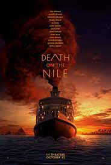

Death On The Nile
Released:
2022
Genre:
Mystery, Crime
Overview:
Agatha Christie's most daring travel mystery.
The tranquillity of a cruise along the Nile is shattered by the
discovery that Linnet Ridgeway has been shot through the head. She was
young, stylish and beautiful, a girl who had everything – until she
lost her life.
Hercule Poirot recalls an earlier outburst by a fellow passenger: ‘I’d
like to put my dear little pistol against her head and just press the
trigger.’ Yet in this exotic setting’ nothing is ever quite what it
seems…